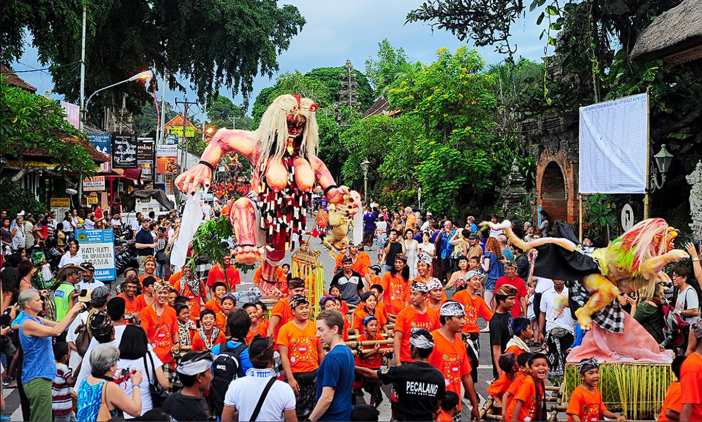

Kebudayaan Indonesia
Indonesia dikenal dengan keanekaragaman budaya yang kaya dan menarik. Berikut adalah beberapa elemen kebudayaan yang istimewa:
Tarian Tradisional
Salah satu contoh tarian tradisional yang terkenal di Indonesia adalah Tari Saman dari Aceh. Tarian ini biasanya digunakan untuk menyampaikan pesan atau dakwah. Tarian ini mencerminkan pendidikan, keagamaan, sopan santun, kepahlawanan, kekompakan dan kebersamaan.
Upacara Adat
Upacara adat di Indonesia sangat beragam dan kaya akan nilai-nilai tradisional. Contohnya, Upacara Ngaben merupakan Upacara pemakaman dalam tradisi Bali. Tujuannya adalah untuk memberikan penghormatan terakhir kepada orang yang meninggal, membersihkan roh dari dunia fisik dan membantu mereka menuju alam spiritual.
Tradisi Unik
Salah satu tradisi unik di Indonesia adalah Perayaan Nyepi di Bali. Nyepi adalah hari raya Hindu yang sakral di mana seluruh pulau Bali merayakannya dengan diam total. Selama Nyepi, penduduk Bali menjalankan tradisi "Catur Brata Penyepian" yang mencakup amati geni (tidak melakukan api), amati karya (tidak melakukan pekerjaan), amati lelungan (tidak melakukan hiburan), dan amati lelanguan (tidak melakukan perjalanan).
Kesenian Tradisional
Jawa Tengah memiliki berbagai jenis seni tradisional seperti wayang kulit, ketoprak (teater tradisional Jawa), dan ludruk. Wayang kulit dengan lakon-lakon epik Ramayana dan Mahabharata sering dipentaskan dalam acara-acara tradisional.